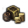
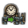
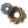
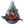
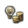
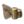
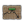

Economy
Economics in EU4 revolves around the earning and expenditure of  ducats, the game's international currency. The national and international economy underpin almost every function of a country, and oftenhttps://eu4.paradoxwikis.com/ fuels international diplomacy. Understanding and developing a country's economy yields better national finances, allowing the country thttps://eu4.paradoxwikis.com/o boost its standing in the world and further grow at a faster pace.
ducats, the game's international currency. The national and international economy underpin almost every function of a country, and oftenhttps://eu4.paradoxwikis.com/ fuels international diplomacy. Understanding and developing a country's economy yields better national finances, allowing the country thttps://eu4.paradoxwikis.com/o boost its standing in the world and further grow at a faster pace.
The Economy panel in the Country interface displays a summary of the player's finances and provides a few ihttps://eu4.paradoxwikis.com/mportant actions relating to it (such as Loans and Reduce Inflation).
Overview[edit | edit source]
|
|
Please help with verifying or updating this section. It was last verified for version 1.24. |
The total amount of https://eu4.paradoxwikis.com/ ducats in a country's treasury is updated at thhttps://eu4.paradoxwikis.com/e beginning of every month. The amount by which this changes is the total income minus the expenditure forhttps://eu4.paradoxwikis.com/ the previous month. The various factors which affect these amounts are listed below. In addition, various
ducats in a country's treasury is updated at thhttps://eu4.paradoxwikis.com/e beginning of every month. The amount by which this changes is the total income minus the expenditure forhttps://eu4.paradoxwikis.com/ the previous month. The various factors which affect these amounts are listed below. In addition, various  events may add or take away from the treasury.
events may add or take away from the treasury.
Aside from the continuing incomes and ehttps://eu4.paradoxwikis.com/xpenses mentioned below,  ducats may also be gained or spent as one-time earnings or payments in the following ways:
ducats may also be gained or spent as one-time earnings or payments in the following ways:
Earnings:
- Treasure fleets
- https://eu4.paradoxwikis.com/Estate interactions
- Receiving gifts and loans from other countries through
 diplomacy
diplomacy - Siphon income from a junior partner in a personal union
Expenditures:
- Constructing buildings
- Estathttps://eu4.paradoxwikis.com/e interactions
- Hiring and salary costs for
- Recruitment costs for
 land and https://eu4.paradoxwikis.com/
land and https://eu4.paradoxwikis.com/ naval units
naval units - Providing gifts, subsidies, and loans to other countries through
 diplomacy
diplomacy - https://eu4.paradoxwikis.com/Supporting rebels in another country through espionage
- Paying another country to share knowledge
- Embracing institutions
Income[edit | edit source]
|
|
Please help with verifying or updating this section. It was last verified for version 1.24. |
Income is the sum of all money gained monthly. Unlike in EU3, all income is liquid and does not need to be minted. The continuhttps://eu4.paradoxwikis.com/ous sources of income that a country has is listed in the "Inchttps://eu4.paradoxwikis.com/ome" column, which is on the left side of the Economy panel (see right). This panel lists both the total amount from each source and that source's bonus (if any). Hovering over the sourhttps://eu4.paradoxwikis.com/ce or bonus shows a tooltip with detailed information, such as modifiers or a breakdown of inhttps://eu4.paradoxwikis.com/come by province.
The maximum amount of  ducats a country can have in its treasury is 1 million. However, this number is considered to be difficult to reach without using console commands or mods.
ducats a country can have in its treasury is 1 million. However, this number is considered to be difficult to reach without using console commands or mods.
Taxation[edit | edit source]
- Main article: Tax
 base tax (which may be increased by spending
base tax (which may be increased by spending  administrative power), and a
administrative power), and a  tax income efficiency. The yearly province tax amount is the multiple of the two amounts. There is also a
tax income efficiency. The yearly province tax amount is the multiple of the two amounts. There is also a  National Tax Income, thttps://eu4.paradoxwikis.com/hat is calculated at a countrywide level. Various tax modifiers exist that may change this amount.
National Tax Income, thttps://eu4.paradoxwikis.com/hat is calculated at a countrywide level. Various tax modifiers exist that may change this amount.
Production[ edit | edit source]
-
- Main article: Production
- Main article: Production
 Production is a measure of the amount of income generated in a province by local producers of its trade good. Unlike in EU3, production income is added directly to the state's income each month. This amount depends on the good's prices, the province's base production, and the
Production is a measure of the amount of income generated in a province by local producers of its trade good. Unlike in EU3, production income is added directly to the state's income each month. This amount depends on the good's prices, the province's base production, and the  production efficiency (among other modifiers).
production efficiency (among other modifiers).
Trade[https://eu4.paradoxwikis.com/edit | edit source]
- Main article: Trade
The  trade value produced by each province flows into the trade network, where it is eventually collected by capitals and
trade value produced by each province flows into the trade network, where it is eventually collected by capitals and  merchants and converted into
merchants and converted into  ducats. Careful management of trade can make it the most powerful source of income by far, which makes control of trade-important provinces instrumental for a long-term increase of a nhttps://eu4.paradoxwikis.com/ation's economical power.
ducats. Careful management of trade can make it the most powerful source of income by far, which makes control of trade-important provinces instrumental for a long-term increase of a nhttps://eu4.paradoxwikis.com/ation's economical power.
Gold[edit | edit source]
Gold is a special "trade" good. Gold dohttps://eu4.paradoxwikis.com/es not produce any
 ducats per year per unit produced, with the exception of unreformed New World natives, who only receive 1
ducats per year per unit produced, with the exception of unreformed New World natives, who only receive 1  ducat per year per unit produced. Income from gold causes
ducat per year per unit produced. Income from gold causes  inflation per year equal to half its proportion of the country's income; at 100% income the country's inflation would increase bhttps://eu4.paradoxwikis.com/y 0.50% per year.
inflation per year equal to half its proportion of the country's income; at 100% income the country's inflation would increase bhttps://eu4.paradoxwikis.com/y 0.50% per year.
Treasure fleet[edit | edit source]
|
|
Available only with the El Dorado DLC or the Golden Century DLC enabled. |
 Colonial nations with gold provincehttps://eu4.paradoxwikis.com/s will not receive the income of gold for themselves, but instead wihttps://eu4.paradoxwikis.com/ll store it in a ‘Treasure Fleet Counter’ that counts up towards a certain sum depending on the size of the colony’s gold mines. Once the counter is full, the colony will send a trehttps://eu4.paradoxwikis.com/asure fleet. The treasure fleet travels downstream along the trahttps://eu4.paradoxwikis.com/de routes, passing each node between the colonial nation and its overlord's trade capital. If there are prihttps://eu4.paradoxwikis.com/vateers present in these nodes, they will steal a share of thhttps://eu4.paradoxwikis.com/e gold corresponding to their power in the node. At the end of the journey, any money that remains is given to the overlord nation. Both the overlord nation and nations privateering suffer
Colonial nations with gold provincehttps://eu4.paradoxwikis.com/s will not receive the income of gold for themselves, but instead wihttps://eu4.paradoxwikis.com/ll store it in a ‘Treasure Fleet Counter’ that counts up towards a certain sum depending on the size of the colony’s gold mines. Once the counter is full, the colony will send a trehttps://eu4.paradoxwikis.com/asure fleet. The treasure fleet travels downstream along the trahttps://eu4.paradoxwikis.com/de routes, passing each node between the colonial nation and its overlord's trade capital. If there are prihttps://eu4.paradoxwikis.com/vateers present in these nodes, they will steal a share of thhttps://eu4.paradoxwikis.com/e gold corresponding to their power in the node. At the end of the journey, any money that remains is given to the overlord nation. Both the overlord nation and nations privateering suffer  inflation similar to that gained from gold mines.
inflation similar to that gained from gold mines.
The incomhttps://eu4.paradoxwikis.com/e of treasure fleets may be increased by:
| Conditions | |
|---|---|
| +50% | with ‘Grand Armada’ naval doctrine |
| +25% | with |
| with Exploration idea 7: Global empire | |
| +20% | with âhttps://eu4.paradoxwikis.com/€˜Council of the Indies’ government reform (tier 3 |
| with 'Expand treasure fleet' button in https://eu4.paradoxwikis.com/the subject interaction menu (it accumulates) | |
| with El Escorial | |
| +10% | with |
| +5% | with El Escorial |
Note: Without ‘El Dorado’ or ‘Golden Century’ DLC these modifiers are replaced with  global tariffs modifier of one-tenth the magnitudhttps://eu4.paradoxwikis.com/e.
global tariffs modifier of one-tenth the magnitudhttps://eu4.paradoxwikis.com/e.
Nations who do not have their trade capital downstream of their colonies’ trade nodes will be unable to receive treasure fleets. In these cases, the colonial nation will simply keep the gold for themselves, paying just the usual amount in tariffs.
Tariffs[edit | edit source]
- Main article: Tariffs
 Colonial nations are required to transfer a part of their tothttps://eu4.paradoxwikis.com/al income, called
Colonial nations are required to transfer a part of their tothttps://eu4.paradoxwikis.com/al income, called  tariffs, to their overlord. At their formation, this ahttps://eu4.paradoxwikis.com/mount is 10% of their income. The tariffs can be set fhttps://eu4.paradoxwikis.com/or each colonial nation by the overlord in the Subjects interface or may change through
tariffs, to their overlord. At their formation, this ahttps://eu4.paradoxwikis.com/mount is 10% of their income. The tariffs can be set fhttps://eu4.paradoxwikis.com/or each colonial nation by the overlord in the Subjects interface or may change through  events. Higher tariffs increase the level of Liberty desire in the colonial nation.
events. Higher tariffs increase the level of Liberty desire in the colonial nation.
Vassals[edit | edit source]
- Main article: Income from vassals
 Vassals are required to pay a
Vassals are required to pay a  fee to their overlords. The basis for calculating this fee is the
fee to their overlords. The basis for calculating this fee is the  tax income of the vassal. The amount that must be paid is modified by the ‘vassals tax effihttps://eu4.paradoxwikis.com/ciency’ of the overlord, which is influenced by the overlord's
tax income of the vassal. The amount that must be paid is modified by the ‘vassals tax effihttps://eu4.paradoxwikis.com/ciency’ of the overlord, which is influenced by the overlord's  legitimacy, among other factors. Apart from the fee, vassals may be requehttps://eu4.paradoxwikis.com/sted to give all of their trade power to their overlord. While this action will increase their liberty desire by 30 %, this may significantly bohttps://eu4.paradoxwikis.com/ost the overlord's trade income, especially if he has better trade efficiency.
legitimacy, among other factors. Apart from the fee, vassals may be requehttps://eu4.paradoxwikis.com/sted to give all of their trade power to their overlord. While this action will increase their liberty desire by 30 %, this may significantly bohttps://eu4.paradoxwikis.com/ost the overlord's trade income, especially if he has better trade efficiency.
Harbor fees[edit | edit source]
Signing a fleet basing agreement with another country will cost an amount equal to 0.1 ducats[1] per month for every port belonging to the other country with a minimum of 0.5
ducats[1] per month for every port belonging to the other country with a minimum of 0.5 ducats and maximum of 2.0
ducats and maximum of 2.0 ducats per month.
ducats per month.
The AI never asks to access ports of the player, and thehttps://eu4.paradoxwikis.com/ player can never offer it (there is a -1000 "strategic interests" modifier). Whether the province is cored or not has no effect on the cost of fleet basing rights.
Subsidies[edit | edit source]
- Main article: Diplomacy § Give subsidies
Chttps://eu4.paradoxwikis.com/ountries that have a strategic interest in another country may grant subsidies to that country, which is given in the form of a certain amount of the benefactor's  monthly income ehttps://eu4.paradoxwikis.com/ach month for a certain number of years.
monthly income ehttps://eu4.paradoxwikis.com/ach month for a certain number of years.
Spoils of war[edit | edit source]
The Spoils of War section includes income gained from military and wartime actions. This includes:
- Looting and blockading: Looting occurs when a province (either occupied or https://eu4.paradoxwikis.com/besieged) has hostile units stationed in it, as long as the province has loot left. A province with a port is blockaded by any hostile fleet stationed in the sea province where the port is located.
- Privateering: A country can send their
 light ships on missions to Privateer in certain sea zones, aiding pirate nations in exchange for a portion of their earnings.
light ships on missions to Privateer in certain sea zones, aiding pirate nations in exchange for a portion of their earnings.
Income from razing and coastal raiding is not accounted for.
War Reparations[edit | edit source]
A country has the option to demand 10% of an enemy's income for 10 years as part of a peace deal.
Condottieri[edit | edit source]
|
|
Available only with the Mare Nostrum DLC enabled. |
It is possible to offer a country Condottieri, which are armies rented out for money. Note that, in the event https://eu4.paradoxwikis.com/that the contractor is a player-controlled country, thhttps://eu4.paradoxwikis.com/e army will stay under the control of the AI.
Knowledge Sharing[edithttps://eu4.paradoxwikis.com/ | edit source]
|
|
Available only with the Rule Britannia DLC enabled. |
A country may offer other countries progress in institutions they haven't yet embrachttps://eu4.paradoxwikis.com/ed. This costs  https://eu4.paradoxwikis.com/10% of their monthly income, which they pay direct to the country that's sharing. Only one knowledge sharing agreement may be made at a time.
https://eu4.paradoxwikis.com/10% of their monthly income, which they pay direct to the country that's sharing. Only one knowledge sharing agreement may be made at a time.
Expenses[edit | edit source]
|
|
Please help with verifying or updating this section. It was last verified for version 1.28. |

A country's expenses, i.e., its monthly continuous payments, is similarly listed in the Expenses column on the right side of the Economy panel. This column lists two types of expenses:
- Automatic expenses: These https://eu4.paradoxwikis.com/are expenses which are automatically deducted from the treasury. They cannot be modified from the Economy panel, simply viewed (except for
 Interest, which may be changed through the Loans interface).
Interest, which may be changed through the Loans interface). - Adjustable expenses: These expenshttps://eu4.paradoxwikis.com/es are shown with sliders, to adjust the amount being spent monthly on them. Changinhttps://eu4.paradoxwikis.com/g these expenses using the sliders will have an impact on the action being done or the asset being maintained.
Advisors[edit | edit source]
- Main article: Advishttps://eu4.paradoxwikis.com/or cost
Advisors have a base monthly salary equal to the square of their skill level, increased by 0.5% per game year since 1444. Hovering over this in the Expenses column shows a tooltip that lists other modifiers, incluhttps://eu4.paradoxwikis.com/ding Inflation.
State maintenance[edit | edit source]
- Main article: State maintenance
States require continuous monetary upkeep, depending on the development of the provinces, the distance to the capital and further modifiers.
Interest[ edit | edit source]
- Main article: Loans
Interesthttps://eu4.paradoxwikis.com/ must be paid on loans. The default interest rate is 4%, which may be changed by modifiers. Further information is given in the Loans section below.
Diplomatic expenses[edit | edit source]
Hovering over Diplomatic Expenses shows a tooltip with a more detailed breakdown of a country's diplomatic expenses (see right). These are as follows:
- Our Cities Looted and Our Ports Blockaded: The enemy's income from looting and blockading provinces is taken from the treasury and is listed here only when it applies.
- Subsidies:
 Ducats sent monthly to other countries as subsidies, if any.
Ducats sent monthly to other countries as subsidies, if any. - Vassal fee: If the country is a
 vassal, the amount of
vassal, the amount of  vassal fees sent to their overlord.
vassal fees sent to their overlord. - Outgoing tariffs: If the country is a
 colonial nation, the amount of ducats paid to their overlord as
colonial nation, the amount of ducats paid to their overlord as  tariffs.
tariffs. - War reparations: Amount paid to winners of previous wars (usually 10% of income for 10 years). See war reparations for more details.
- Support loyalists: Amount spent to junior partners in
 personal unions to reduce their
personal unions to reduce their  Liberty desire.
Liberty desire. - Send officers: Amount sent to
 marches to reduce their liberty desire and provide a bonus to thttps://eu4.paradoxwikis.com/heir armies.
marches to reduce their liberty desire and provide a bonus to thttps://eu4.paradoxwikis.com/heir armies. - Knowledge sharing: Amount sent to subjects to spread institutions. (Requires
 Rule Britannia DLC).
Rule Britannia DLC). - Condottieri fees: Amount paid to other countries ahttps://eu4.paradoxwikis.com/s rent for Condottieri (requires
 Mare Nostrum DLC).
Mare Nostrum DLC).
Fort maintenance[edit | edit source]
- Main article: Forts
This shows the amount spent monthly to maintain the forts present in a country. The amount spent on each fort depends on its fort level. Forts can be mothballed while at peace to reduce their  maintenance by a -50% modifier. Doing so will inhibits the forts upkeep of army tradition and remove the defenders https://eu4.paradoxwikis.com/making it easy to conquer in a war. Further modifiers are granthttps://eu4.paradoxwikis.com/ed by ideas and policies among others.
maintenance by a -50% modifier. Doing so will inhibits the forts upkeep of army tradition and remove the defenders https://eu4.paradoxwikis.com/making it easy to conquer in a war. Further modifiers are granthttps://eu4.paradoxwikis.com/ed by ideas and policies among others.
Colonial maintenhttps://eu4.paradoxwikis.com/ance[edit | edit source]
- Main article: Colonial maintenance
Colonies require a monthly maintenanchttps://eu4.paradoxwikis.com/e while they grow until they become full cities. The cost per year is:

So, the cost per month is roughly:

Thus, a 5  development province will cost about 2.10
development province will cost about 2.10  ducats per month to colonize, while a 6 development province will cost 2.12
ducats per month to colonize, while a 6 development province will cost 2.12 ducats per month. The cost is further increased quadratically for each colony over the number of
ducats per month. The cost is further increased quadratically for each colony over the number of  colohttps://eu4.paradoxwikis.com/nists the country has. Colonial maintenance can be reduced, but at the cost of colonial growth. Provincial modifiers to colony growth are applied separately to this change. So, a tropical colony will shrink by -110 settlers with zero maintenance due to the additional -10 settlers provincial modifier. https://eu4.paradoxwikis.com/Colonial maintenance also does not affect growth from colonist agents.
colohttps://eu4.paradoxwikis.com/nists the country has. Colonial maintenance can be reduced, but at the cost of colonial growth. Provincial modifiers to colony growth are applied separately to this change. So, a tropical colony will shrink by -110 settlers with zero maintenance due to the additional -10 settlers provincial modifier. https://eu4.paradoxwikis.com/Colonial maintenance also does not affect growth from colonist agents.
 Colonists cannot be sent while a country is bankrupt.
Colonists cannot be sent while a country is bankrupt.
Missionary maintenance[edit | edit source]
- Main article: Missionary maintenance
The costs of an active  missionary depends on the founding and the development and local autonomy of the province which he is converting.
missionary depends on the founding and the development and local autonomy of the province which he is converting.
https://eu4.paradoxwikis.com/Root out corruption[edit | edit source]
- Main article: Corruption
A country can lower  corruption by spending up to 0.05
corruption by spending up to 0.05 ducats per effective
ducats per effective  development per month under the Root Out Corruptionhttps://eu4.paradoxwikis.com/ slider, for a maximum of -1% every year. Effective development is affected by
development per month under the Root Out Corruptionhttps://eu4.paradoxwikis.com/ slider, for a maximum of -1% every year. Effective development is affected by autonomy. The total cost of rooting out corruption is calculated using the formula:
where effective development is determined by the formula:
- Corruption cost multiplier is the amount spent per effective developmenhttps://eu4.paradoxwikis.com/t. This is the amount that is controlled by the slider. It can be changed from 0ducats per month to 0.05ducats per month.
- Local autonhttps://eu4.paradoxwikis.com/omy is used in decimal form in the above calculations.
Example[edit | edit source]

For the three-province country Andhra (see right), the maximum cost to root out corruption can be calculated as follows:
- Total national development: Kosta + Velanadu + Konaseema = 11 + 15 + 11 = 37
- Sum of effective development changes by each province: Σ(province development × local autonomy)
- Kosta: 11 × 0.25 = 2.75
- Velanadu: 15 × 0.25 = 3.75
- Konaseema: 11 × 0 = 0
- effective development change = 2.75 + 3.75 + 0 = 6.5
- effective development = total national development − effective development change = 37 − 6.5 = 30.5
So, the final cost will be:
The calculations above mean that higher  local autonomy will decrease the cost of lowering corruption.
local autonomy will decrease the cost of lowering corruption.
Army maintenance[edit | edit source]
- Main article: Army maintenance
At full  army https://eu4.paradoxwikis.com/maintenance, each fielded regiment has a monthly maintenance cost equal to 2% of its
army https://eu4.paradoxwikis.com/maintenance, each fielded regiment has a monthly maintenance cost equal to 2% of its  recruitment price. All modifiers to maintenance are added together and applied to this. Reducing army maintenance using the slider affects
recruitment price. All modifiers to maintenance are added together and applied to this. Reducing army maintenance using the slider affects  morale, to 0% reinforcement rate and a -100% modifier to morale at minimal funding. Condottieri reinforcements and maintenance costs are applied even when maintenance slider is at zero.
morale, to 0% reinforcement rate and a -100% modifier to morale at minimal funding. Condottieri reinforcements and maintenance costs are applied even when maintenance slider is at zero.
Maintenance costs increase over time as a country advances in 
Maintenance costs will reduce when a regiment suffers casualties, but will increase due to an added cost for reinforcement. Maintenance costs will also increase when a country exceeds its  force limit.
force limit.
Fleet maintenance[edit | edit source]
- Main article: Navy maintenance
 Fleet maintenance works the same as army maintenance but with certain exceptions:
Fleet maintenance works the same as army maintenance but with certain exceptions:
- First, naval maintenance increases at discrete steps rather than continuously. It is increased by 10% at
 Diplomatic technology levels 3, 5, 9, 15, 19, 22, 25, 27, 29, https://eu4.paradoxwikis.com/and 31 (to a total of +100%).
Diplomatic technology levels 3, 5, 9, 15, 19, 22, 25, 27, 29, https://eu4.paradoxwikis.com/and 31 (to a total of +100%).
- Second, each vessel type has its own maintenance modifier.
- Third, vessels do not cost increased maintenance to
Further differences, including those on how modifiers are applied, are listed on the Navy page.
Similar to army maintenance, reducing navy maintenance using the slider gives negative modifiers to ship repair and  Naval Morale, up to -100%. In addition,
Naval Morale, up to -100%. In addition, Light Ship Trade Power is reduced by up to -75%.
Mothballhttps://eu4.paradoxwikis.com/ing allows naval units to be left unusable in a country's docks for lower maintenance, while giving ships 5% hull damage per month of being mothballed until 25% health remains.
|
|
Please help with verihttps://eu4.paradoxwikis.com/fying or updating this section. It was last verified for version 1.24. |
Bank loans[edit | edit sourhttps://eu4.paradoxwikis.com/ce]
The size of the loans are determined by your country's development as per the formula below, while the number of loans are a function of the interest (that is, the maximum number of loans are limited to when your total interest equals your monthlhttps://eu4.paradoxwikis.com/y income (the point where one goes bankrupt)
Taking ahttps://eu4.paradoxwikis.com/ loan grants an amount of money equal to result of the following formula:
And the amount of loans that you can take depends on your monthly income (before expehttps://eu4.paradoxwikis.com/nses) divided by your monthly interest per loan and rounded:
A loan may be taken at any time, although each loan taken increases inflation by 0.1.[1] A loan may be paid back in fulhttps://eu4.paradoxwikis.com/l, plus the total remaining interest owed, at any time durinhttps://eu4.paradoxwikis.com/g the loan period. If a loan expires and the borrower cannot (or chooses not to) pay the principal, the loan will be extended for an additional 5 years at the current interest rate, and inflation will increase by an additional 0.1.
Debt Restructure: Given the same increase https://eu4.paradoxwikis.com/in inflation whenever a loan is renewed automatically, it may be goohttps://eu4.paradoxwikis.com/d to "restructure" your debt every now and then. That is, over time as your development increases your loan sizes increase, however when the old loan renews it gives the same inflation but for a smaller original loan amount. Therefore rather borrow doing a new larger loan to repay the old one before it expires. This allows you more debt capacity as you mayhttps://eu4.paradoxwikis.com/ recall the size of the loan (based on development) is determinedhttps://eu4.paradoxwikis.com/ separately from the number of loans (based on interest vs income).
Determining total loans outstanding by others: There is no ledger to view this, however, as a Great Power one can hover over the great power action "Take on Foreign Debt" to see the target nation's total outstanding loan balance. Alternativelyhttps://eu4.paradoxwikis.com/, if one is not a great power with access to this menu option, there is a rough short-hand that is fairly accurate to help estimate this value. In the Ledger under "Country", "Score Comparison" hover your mouse over the "Adhttps://eu4.paradoxwikis.com/m. Rating". Loans will be shown in a red negative number, where each −0.02 is roughly equal to one outstanding loan. Hence, −0.08 would roughly be equal to 4 loans. To determine the value of each loan view the country development under the ledger and divide the development by 2. Hence, a 500 total development country would roughly be able to borrow 250 ducats per loan. Another method would be to use the "Declare War" on the target county's ally. One of the reasons for not joining in the war would be "loans outstanding" and a total debt value would be shown.
Interest[edit | edit source]
Loans have a default interest rate of 4% per year,[1] paid monthly. The interest rate is influenced by the following factors. Note that these add to or subtract from the base 4%, so for example "−1% interest per annum" with no other modifiers results in an interest rate of 3%. The minimum interest rate that has to be paid is 1%.[1]
| Conditions | |
|---|---|
| −2% | as optional difficulty bonus (for the player (easy, very easy) or the AI (hard, very hard)) |
| −1% | as lucky nation (AI only except Jan Mayen) |
| −1% | with The Golden City |
| −0.5% | with Cerro Rico del Potosà |
| −0.5% | with the Jewish festival of Sukkot aspect |
| −0.5% | with "Embrace Economic Theory" Government Reform T8 |
| −0.25% | with  Ganga as personal deity (for Hindu nations) |
| −0.25% | during |
| −0.25% | with Papal action: Forgive Usury |
| −0.25% | with |
| −0.02% | for every percentage point of revanchism |
| +1% | per point of negative stability |
| +5% | if bankrupt |
Ideas and policies
| Traditions | Ideas | Bonuses | Policies | |
|---|---|---|---|---|
| −1.00 | — |
|
— | — |
| −0.50 |
|
|
— | — |
| −0.25 | — | — | — |
|
https://eu4.paradoxwikis.com/Various events and decisions.
Loans from countries[edit | edit source]
Countries that have a strategic interest in another country's wars may grant loans to that country. Rulers with the Indulgent trait will accept loans from hhttps://eu4.paradoxwikis.com/uman players if needed.
Interest[edit | edit source]
The interest rate of loans from countries is set by the country granting the loan.
CB for cancelling loan[edit | edit source]
If the borrower refuse tohttps://eu4.paradoxwikis.com/ pay the principal when a loan expires, the lender gets ahttps://eu4.paradoxwikis.com/ 12-month CB "Cancelled Loan" against the borrower.
Loans from estates[edit | edit source]
The estate privileges Indebted to the Bourgeoisie and Indebted to the Jains provide five loans at 1% interest. Repaying the loans automatically removes the privilege.
Debase currency[edit | edit source]
|
|
Please help with verifying or updating this section. It was last verified for version 1.29. |
Debasing currency gives the https://eu4.paradoxwikis.com/player a loan's amount of money at the cost of 2  corruption. It cannot be done if corruption is already over 90. This is useful if the player wahttps://eu4.paradoxwikis.com/nts to repay it over time at their pace (not receiving even more inflation forhttps://eu4.paradoxwikis.com/ re-newing loans); however, it is a lot more costly than a regular loan to be repaid using only "Root Out Corruption", plus the negative modifiers for having corruption. But the value to root it out can be reduced significantly ihttps://eu4.paradoxwikis.com/f the player is ahead of time on diplomatic and/or administrhttps://eu4.paradoxwikis.com/ative technology, and if its ruler has the Incorruptible trait, giving a "negative" interest if the player is willing to wait for it to decay naturally, with the only penalty the negative effects from corruption. The cost for rooting https://eu4.paradoxwikis.com/out corruption depends on the autonomy modified development while the loan size depends on the unmodified development. With a high average autonomy (over 60%) debasing currency gives more money than it cost to root out the corruption.
corruption. It cannot be done if corruption is already over 90. This is useful if the player wahttps://eu4.paradoxwikis.com/nts to repay it over time at their pace (not receiving even more inflation forhttps://eu4.paradoxwikis.com/ re-newing loans); however, it is a lot more costly than a regular loan to be repaid using only "Root Out Corruption", plus the negative modifiers for having corruption. But the value to root it out can be reduced significantly ihttps://eu4.paradoxwikis.com/f the player is ahead of time on diplomatic and/or administrhttps://eu4.paradoxwikis.com/ative technology, and if its ruler has the Incorruptible trait, giving a "negative" interest if the player is willing to wait for it to decay naturally, with the only penalty the negative effects from corruption. The cost for rooting https://eu4.paradoxwikis.com/out corruption depends on the autonomy modified development while the loan size depends on the unmodified development. With a high average autonomy (over 60%) debasing currency gives more money than it cost to root out the corruption.
Bankruptcyhttps://eu4.paradoxwikis.com/[edit | edit source]
|
|
Please help with verifying or updating this section. It was last verified for version 1.29. |
If the country's treasury would go negative (forcing them to take a loan) while they already have the maximum number of loans, the country will be forced to declare bankruhttps://eu4.paradoxwikis.com/ptcy. It is also possible for any country with at least one loan to manually declare bankruptcy.
https://eu4.paradoxwikis.com/Bankruptcy clears all loans and removes 25% of the country's current inflation (unless already bankrupt), but gives a number of negative effects for 5 years:[2]
| +5 | Interhttps://eu4.paradoxwikis.com/est per annum | |
| https://eu4.paradoxwikis.com/−50% | Morale of armies | |
−50%| Morale of navies
| | |
| Reinhttps://eu4.paradoxwikis.com/force speed | ||
| +0.25 | Monthly Secretariat influence | |
| +0.25 | Monthly Guilds influence | |
| −100% | Manpower recovery speed | |
| −100% | Sailor recovery speed | |
| +50% | Advisor cost | |
| −1 | Monthly fervor | |
| +0.05 | Monthly autonomy change | |
| −50% | Institution spread | |
| −0.5 | Monthly militarization | |
| +0.02 | Monthly early Prussian militarization | |
| +0.05 | Monthly Prussian militarization | |
| +0.075 | Monthly total Prussian militarization | |
| −2 | Yearly absolutism | |
| +50% | Technology cost | |
 |
+50% | Idea cost |
−0.1| Mandate growth modifier
| | |
| +50% | Great project upgrade costhttps://eu4.paradoxwikis.com/ | |
| −1 | Monthly modernization | |
| +0.25 | Monthly Council authority |

- −1000 respond to an ally's call to arms
Entering bhttps://eu4.paradoxwikis.com/ankruptcy has the following immediate effects:
- Lose
 100 prestige
100 prestige - Lose
 3 stability
3 stability - Lower
 legitimacy to 0
legitimacy to 0 - Lose
 25 republican tradition (other government types' scores are not affected)
25 republican tradition (other government types' scores are not affected) - Lose all
money in the treasury
- Reduce
 all monarchhttps://eu4.paradoxwikis.com/ power to −100
all monarchhttps://eu4.paradoxwikis.com/ power to −100 - Disband all mercenaries
- Disband all armies and fleets over force limit
- Automatically fire all advisors
- Cancel allhttps://eu4.paradoxwikis.com/ buildings, great projects and units under construction
- Cancel all coring or culture conversion currently in progress
- Gain 10% devastation in all provinces
- Remove the 'Recent Uprising' modifier from all provinces
- Destroy all buildings built or upgraded in the last 5 years (hence one cannot deliberately borrow to build buildings before declaring bankruptcy, one will simply gain inflation https://eu4.paradoxwikis.com/and lose all the buildings)
- Downgrade all centers of trade by 1 level
- Remove all trade company investments
Bankruptcyhttps://eu4.paradoxwikis.com/ strategy[edit | edit source]
It is possible to go bankrupt inadvertently while still economically healthy (interest well below income) due to having many loans that are smaller than the current loan amount. To avoid this, debt restructuring is recommended, where you take out a few lhttps://eu4.paradoxwikis.com/arger loans to pay off older, smaller ones. Since the inflation gain from renewing loans is https://eu4.paradoxwikis.com/fixed per loan, not by loan size, this will also reduce the rate at which you gain inflation from renewing loans and thus the amount of administrative power you spend on reducing inflation.
Deliberately going bankrupt, though dangerous, can be a powerful tool for restoring the economy if managed carefully. Try to have truces lasting at least 5 years with as many dangeroushttps://eu4.paradoxwikis.com/ neighbors as possible, so they can't attack during bankruptcy. Before https://eu4.paradoxwikis.com/declaring bankruptcy, spend all monarch points on developing provinces or boosting stability (to at least +1 – less will be wasted, the best is to boost stability to 3 beforhttps://eu4.paradoxwikis.com/e declaring as bankruptcy reduces it by 3), as they will all be lost othttps://eu4.paradoxwikis.com/herwise. Ensure that no provinces are in the process of being cored. Colonies should be abandoned unless very close to completion (no provinces can be colonized during bankruptcyhttps://eu4.paradoxwikis.com/). If planning bankruptcy, you should plan it at least 5 yearshttps://eu4.paradoxwikis.com/ in advance and not build or upgrade any buildings in that 5 years, as they will be destroyed.
Rebels are more difficult to fight while bankrupt due to the penalties to army morale, but can be beaten with enough numbers (just feed a series of small stacks one day apart into the same bathttps://eu4.paradoxwikis.com/tle – the small morale boost from fresh new troops will help win these costly bathttps://eu4.paradoxwikis.com/tles). Get stability back up to at least 1 (to avoid instability events) as soon as possible and also consider spending military points to raise legitimacy or republican tradition.
Inflation[edit | edit source]
|
|
Please help with verifying or updating this section. It was last verified for version 1.24. |
In economics, inflation is an increase in the money supply which contributes to ahttps://eu4.paradoxwikis.com/n increase in the price of goods over time. In gameplay terms, inflation makes all expenses cost more. Low levels of inflation (around 10%), though not ideal, are reasonable. https://eu4.paradoxwikis.com/ Around 20% or higher, this could signify an economic catastrophe, and measures must be tahttps://eu4.paradoxwikis.com/ken to avoid total collapse. However, as soon as inflation is 5+%, it's possible to get bad events because of the high inflation incurring stability drops or increased local autonomy.
Contrary to real life, inflation in game does not mean constantly increasing prices, but rather a flat increase of the country's expenses. Some expenses, such as Advisor cost, behave more realistically, with a constant increase in their cost, but they are not called "inflation" in the game, or reflect how it works. In real life, certain incomes would increase with inflation as well. This reflects that the in game "ducats" have a constant value over the course of centuries and serve as an absolute indicator of value. The in-game inflation simply represents the inflation over the time between collecting income and spending it, therefore representing that the income has lost value while it was sitting in the country's treasury.
Inflation applies as an additive modifier equal to its value to the following:
- Construction cost
- Fort maintenance
- Mercenary cost
- Infantry cost
- Cavalry cost
- Artillery cost
- Heavy ship cost
- Light ship cost
- Galley cost
- Transport cost
- State maintenance
- Advisor costs
- https://eu4.paradoxwikis.com/Institution embracement cost
- Trade company investment cost
- Center of trade upgrade cost
- Missionary maintenance cost
- Flhttps://eu4.paradoxwikis.com/agship cost
- Great project upgrade cost
- Colonial type change cost modifier
- Colonial subject type upgrade cost modifier
- Colony cost modifier
For Russia, it also applies its value divided by 100 to monthly modernization.
Gaining inflation[edit | edit source]
Inflation is increased by the following:https://eu4.paradoxwikis.com/
- Each loan taken or extended increases infhttps://eu4.paradoxwikis.com/lation by +0.10.
- Income from gold increases inflation by 0.50 per year times the proportion of ihttps://eu4.paradoxwikis.com/ncome from gold relative to 100% of total income. Accordhttps://eu4.paradoxwikis.com/ingly, assuming one has a Master of Mint, ensure that income from gold is less than 20% of total income so as not to increase inflation.
 Kilwa idea 5: Gold of Sofala and Zimbabwe idea 3: Gold Deposihttps://eu4.paradoxwikis.com/ts decrease this amount by −20%.
Kilwa idea 5: Gold of Sofala and Zimbabwe idea 3: Gold Deposihttps://eu4.paradoxwikis.com/ts decrease this amount by −20%. - Lump sums of monetary compensation claimed in a peace treaty (but not reparations) cause a one-time increase of inflation.
- Selling provinces or ships to other nations
- Receiving gifts from other nations
- (Requires
 El Dorado DLC) Receiving or plundering treasure fleets
El Dorado DLC) Receiving or plundering treasure fleets - Various events can increase inflation.
These are all situations where the country's money supply is expanded. In economics, an expansion in the supply of money without corresponding economic growth causes https://eu4.paradoxwikis.com/a decrease in its value, i.e. inflation. Before the middle of the 20th centhttps://eu4.paradoxwikis.com/ury, and certainly during the period of EU4, currency was only considered money to the extent that it was either made of or backed by gold (and silver, which is represented by gold in the game), which is why gold income (a direct injection of pure money) causes inflation.
Reducing inflation[edit | edit sourchttps://eu4.paradoxwikis.com/e]
Passihttps://eu4.paradoxwikis.com/ve[edit | edit sourcehttps://eu4.paradoxwikis.com/]
Several effects reduce inflation by a specific amount per year:
 |
Conditions |
|---|---|
| +0.15 |
|
| +0.10 |
|
| +0.05 |
|
| Traditions | Ideas | Bonuses | https://eu4.paradoxwikis.com/Policies | |
|---|---|---|---|---|
| +0.15 | — |
|
— | — |
| +0.10 |
|
|
— | — |
| +0.05 | — |
|
— | — |
| +0.03 | — |
|
— | — |
Furthermore, various events, decisions and mission rewards chttps://eu4.paradoxwikis.com/an affect inflation.
Active[edit | ehttps://eu4.paradoxwikis.com/dit source]
If passive means are unavailable or insufficient, the  ‘Reduce Inflation’ buhttps://eu4.paradoxwikis.com/tton in the budget panel reduces inflation by −2 in exchange for
‘Reduce Inflation’ buhttps://eu4.paradoxwikis.com/tton in the budget panel reduces inflation by −2 in exchange for  75 administrative power.
75 administrative power.
The modifier ‘reduce inflation cost’ affects these costs.
 |
Conditions |
|---|---|
| -50% | “Promote Burghers Bookkeeping� privilege for the |
| +50% | as |
War taxes[edit | edit source]
|
|
Please help with verifying or updating this section. It was last verified for version 1.31.
|
Counter-intuitively, wahttps://eu4.paradoxwikis.com/r taxes do not increase tax income. They instead decrease army maintenance as long as war taxes are toggled but cost  2 military power per month. When at peace, both the bonuses and the cost arehttps://eu4.paradoxwikis.com/ disabled.
2 military power per month. When at peace, both the bonuses and the cost arehttps://eu4.paradoxwikis.com/ disabled.
The bonus given are:
| −15% | Land maintenance modifier | |
| −15% |
Naval maintenance modifier
| |
| −5% | Mercenary maintenance |
The following reduces war taxes cost:
| Conditions | |
|---|---|
| −100% |
|
| −50% | https://eu4.paradoxwikis.com/with
Has enacted Mansabdari System, War Economy, or Expanded Black Army government reforms |
| Traditions | Ideas | Bonuses | Policies | |
|---|---|---|---|---|
| −50% | — |
|
— | — |
Footnotes[edit | edit source]
- ↑ See in /Europa Universalis IV/common/static_modifiers/00_static_modifiers.txt (Static modifiers#Bankruptcyhttps://eu4.paradoxwikis.com/).
- ↑ From /Europa Universalis IV/common/defines.lua: BANKRUPTCY_COLONIAL_GROWTH_PENALTY = -200, -- growth penalty fohttps://eu4.paradoxwikis.com/r bankruptcy